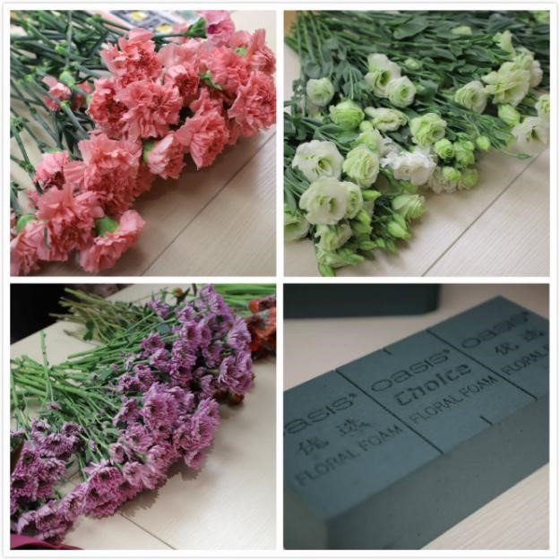
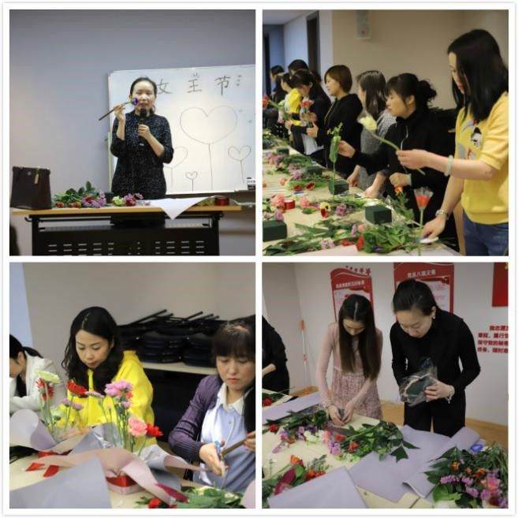
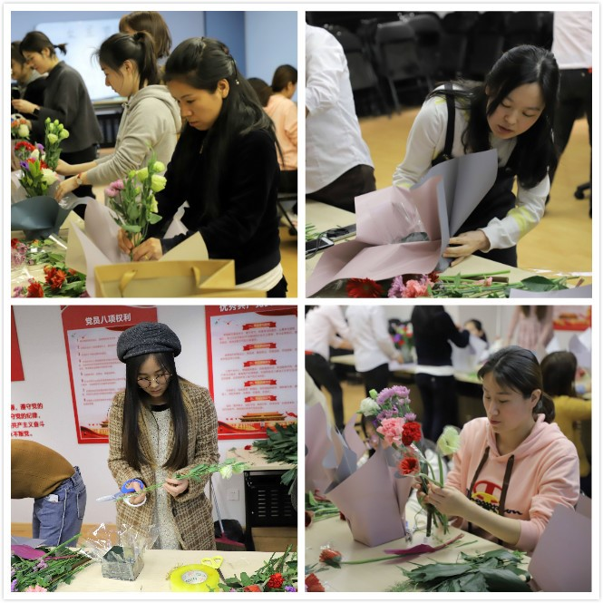
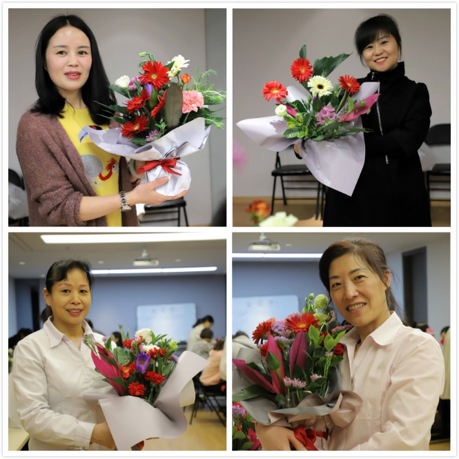
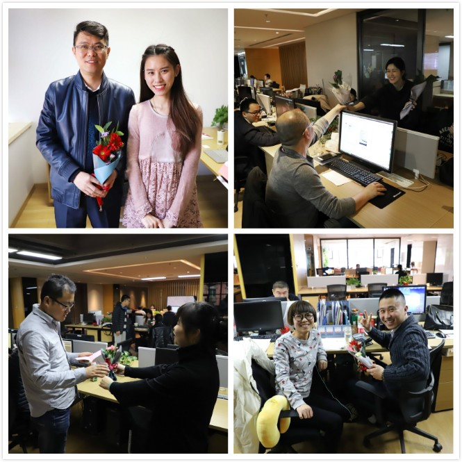

“俏丽若三春之桃，清素若九秋之菊”、“梨花一枝春带雨”、“清水出芙蓉，天然去雕饰”……从古至今的诗词歌赋中，俪人与花总是如影相随。在春意盎然的古城西安三月，陕西万盛达企业的俪人们与花展开了一场美妙的约会。为庆祝三八妇女节，3月8日下午，一场由万盛达俪人主演的插花大戏火热上映。

01 | 插花素材
活动中，公司行政人事部特别邀请了花艺讲师给大家讲授插花知识，从花材、容器、养护等方面介绍了插花的艺术造型要素和技巧手法，并在现场做了生动的演示。

02 | 专注学习
在老师的指引下，女同事们兴致盎然，边看边学，康乃馨、勿忘我、桔梗、玫瑰、弗朗等各式花草在大家的巧手雕琢下各展风姿，每个人都沉浸其中，专注地审视着每朵花的特征，仔细端详着整体搭配和造型。

03 | 巧手雕琢
随着时间的推移，一盆盆错落有致、造型各异的插花作品展现在大家眼前，或清新淡雅，或高端大气，或色彩绚烂，或新颖创意，这些巧思也收获了花艺老师由衷的赞叹！

04 | 大功告成
在怡人的花香中，女同事们纷纷将亲手DIY的精美花束送给日常工作中曾给予帮助或经常协作的男同事们，以此表达感激之情。男同事们在善意的笑声中略带羞涩地接过花束，他们可以在公司特意备好的卡片中写下祝福的话语，并转送给心目中最珍视的女性。一束花，承载了不一样的情谊在流动，也成为本场活动最特别的环节。

05 | 赠人玫瑰 手有余香
生活需要仪式感。在这样一个特殊的节日里，一堂插花课，让参与其中的每个人都收获了愉悦和明媚。作为万盛达的“半边天”，我们爱工作，爱生活，我们希望在未来的每一天都活得漂亮，活出精彩！